Wakkanai
Wakkanai · Hokkaido
Wakkanai
Highlighted on the Hokkaido map.
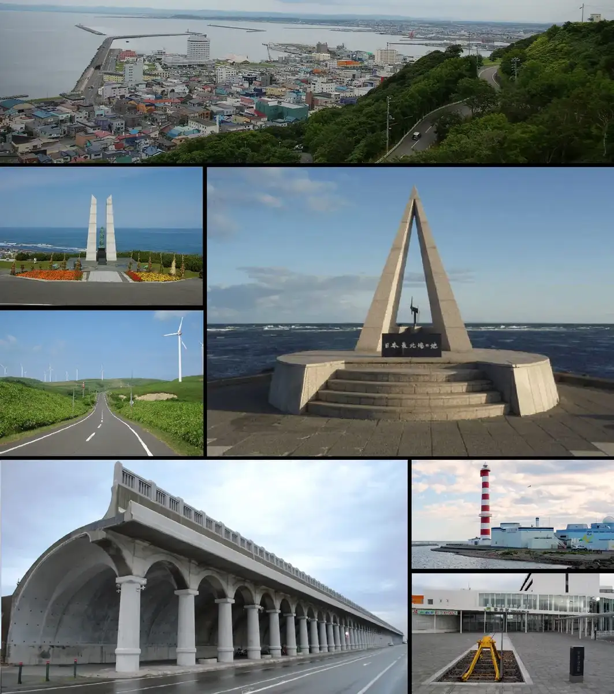
Stay
天然温泉 天北の湯 ドーミーイン稚内
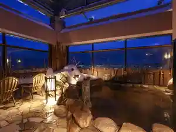
Tennen Onsen Ten Kita No Yu Doomiiin Wakkanai
THE STAY WAKKANAI
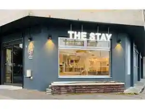
The Stay Wakkanai
ゲストハウス モシリパ
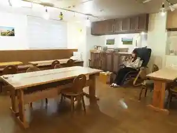
Gesutohausu Moshiripa
ホテル美雪
Hoteru Miyuki
べっどぷらす
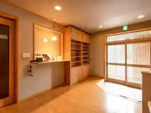
Beddopurasu
ホテルサハリン
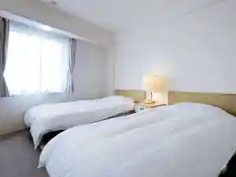
Hoterusaharin
HOTEL TRUNK WAKKANAI
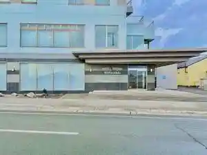
Hotel Trunk Wakkanai
サフィールホテル稚内
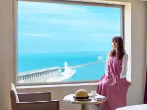
Safiiruhoteru Wakkanai
旅館 山一
Ryokan Yamaichi
ホテル ニューチコウ
Hoteru Nyuuchikou
casa hotel
Casa Hotel
稚内温泉 ホテル大将
Wakkanai Onsen Hoteru Taishou
Dining
いろはにほへと 南稚内店

Irohanihoheto Minami Wakkanai Mise
白木屋 稚内店

Shirokiya Wakkanai Mise
生ラムジンギスカン専門店 羊師 稚内店
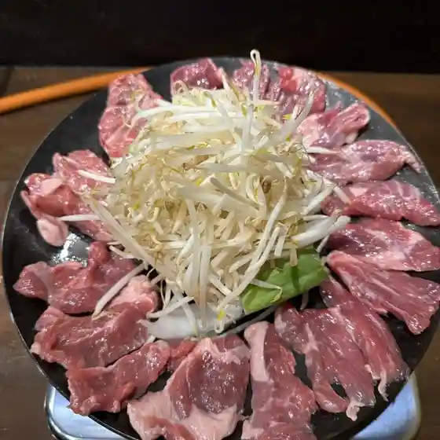
Nama Ramujingisukan Senmonten Hitsuji Shi Wakkanai Mise
ホテルサハリン
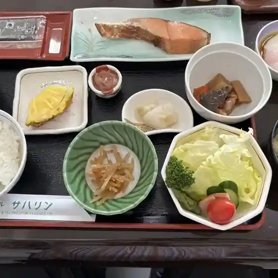
Hoterusaharin
いちごじゃむ
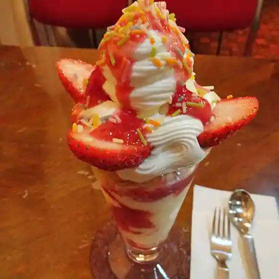
Ichigojamu
ヴァン
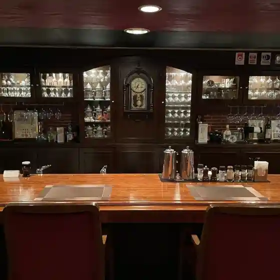
Van
ばっかす
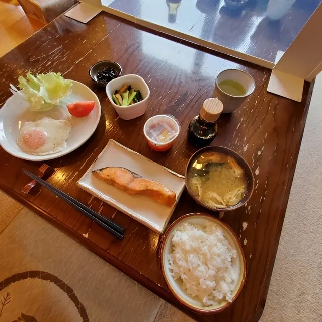
Bakkasu
セイコーマート 若葉台店
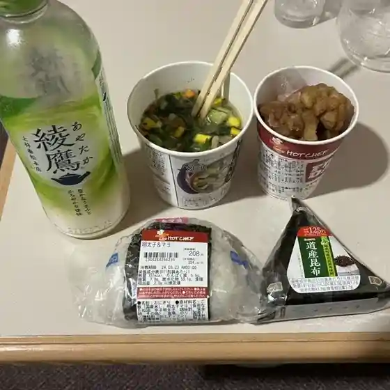
Seikoomaato Wakabadai Mise
トモエ
Tomoe
ANAフェスタ 稚内ロビー店
Ana Fesuta Wakkanai Robii Mise
斗夢ソーヤ
To Yume Sooya
そば処 壱文
Soba Tokoro Ichibun
リュミエール
Ryumieeru
月うさぎ
Gatsu Usagi
焼肉平成園
Yakiniku Heisei Sono
御菓子司 小鹿
O Kashi Tsukasa Kojika
風の宿 宗谷パレス
Kaze No Yado Souya Paresu
小さなホテル みのり
Chiisa Na Hoteru Minori
レストラン・if
Resutoran If
タロ・ジロの店
Taro Jiro No Mise
どん
Don
親爺
Oyaji
漁師の店
Ryoushi No Mise
炉端 蝦夷の里
Robata Ezo No Sato